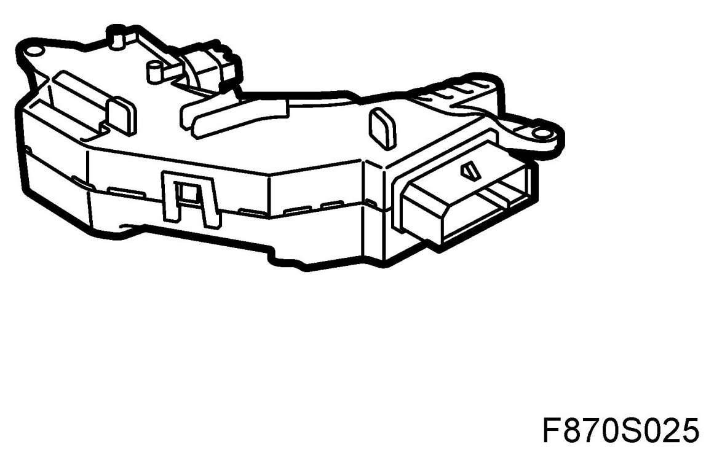
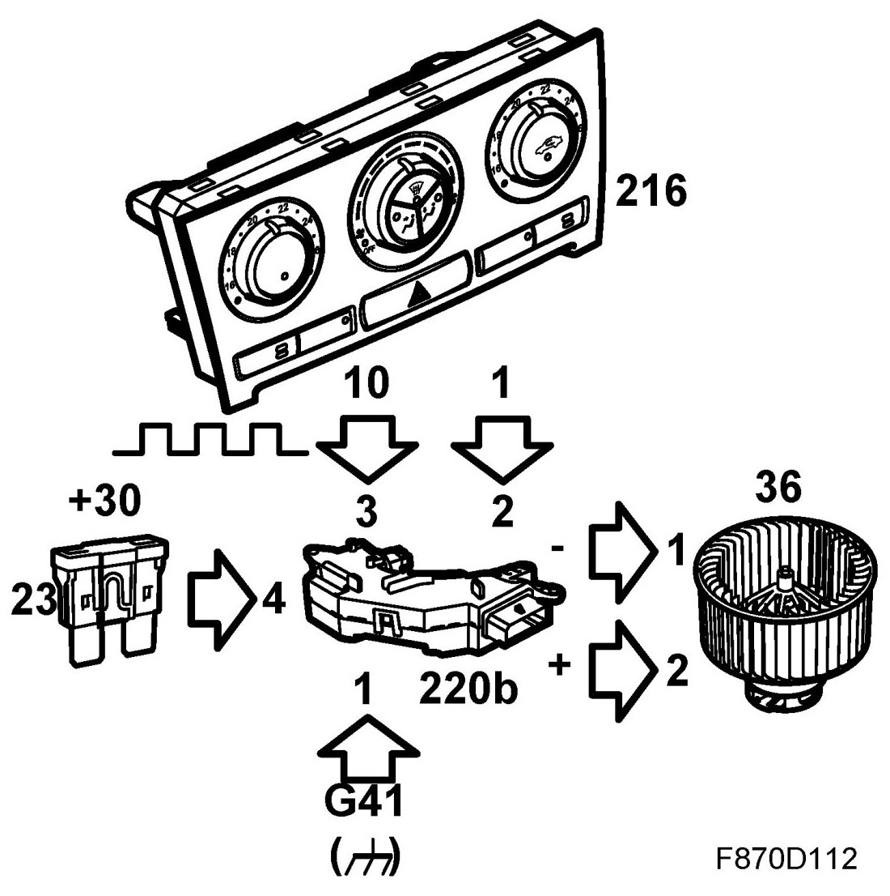
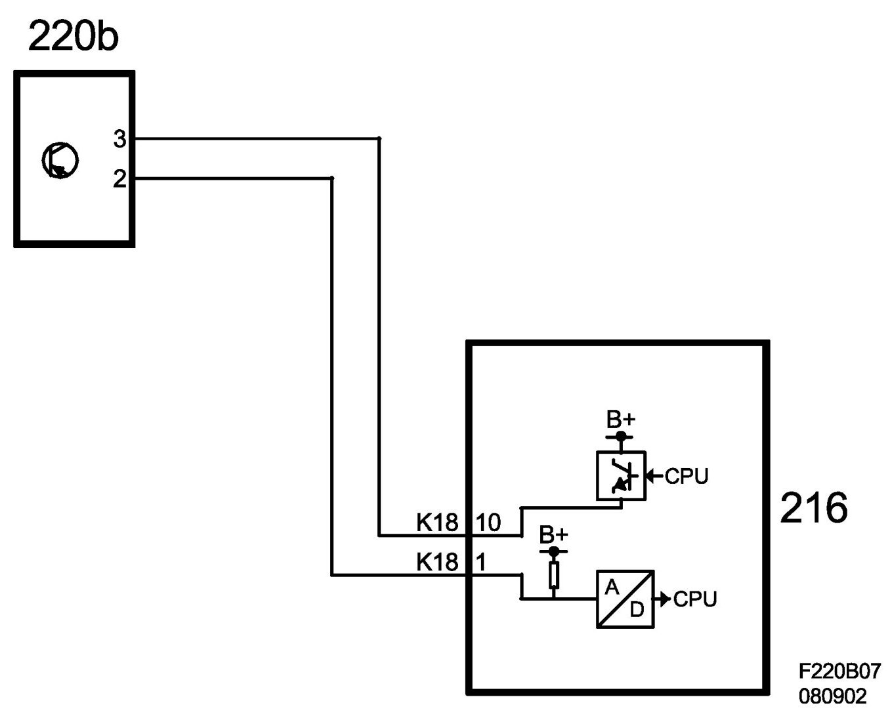
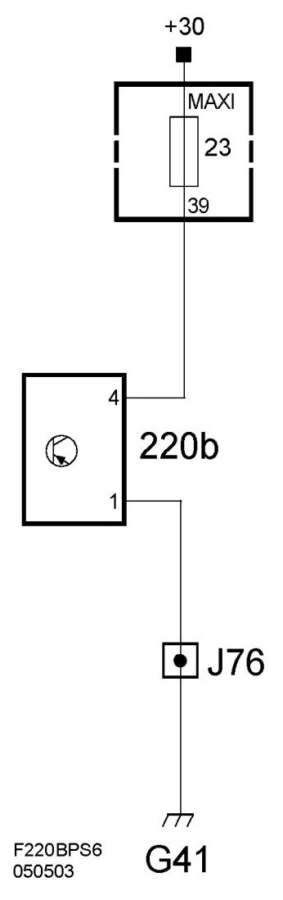

Control Module HVAC: Description and Operation
Control Unit, Ventilation Fan, ACC (220b)
Location
Control unit, ventilation fan, ACC (220b).
Main task
Along with input from the ACC unit, the control unit controls the speed of the ventilation fan motor.
Type
The control unit contains electronics which receive and process the ACC unit's control signal with regards to fan speed. The control unit grounds the ventilation fan motor and controls fan speed by increasing or decreasing the power supply. Control unit diagnostics occur on the ACC unit input and the outputs to the ventilation fan motor.

Connect
The fan control unit contains two connectors; a four-pin connector connected to the ACC unit and a two-pin connector which is directly-connected to the ventilation fan motor.
Four pin connector.
B+ feed to control unit pin 4 from fuse 23 (fuse board 22) and is connected to ground through pin 1 on grounding point G41.
Fan speed is controlled from ACC unit pin 10 (K18) through control unit pin 3 with a 2 kHz PWM.
Fan control unit pin 2 is connected to ACC unit pin 1 (K18) with a return feed for diagnostics information. The control unit sends a 2 kHz PWM to the corresponding fan speed input. If a fault is detected, the control unit sends the indicated pulse ratio and the ACC unit generates the relevant DTC.
Two-pin connection to the ventilation fan motor.
The control unit is mounted in such a way that its two-pin voltage and ground connector are directly connected to the ventilation fan motor.
The fan motor is connected to ground through the fan control unit on grounding point G41. Fan motor speed is controlled by the control unit with an increase or decrease of the power supply.

Wiring diagram, control signal.

Wiring diagram, power supply
